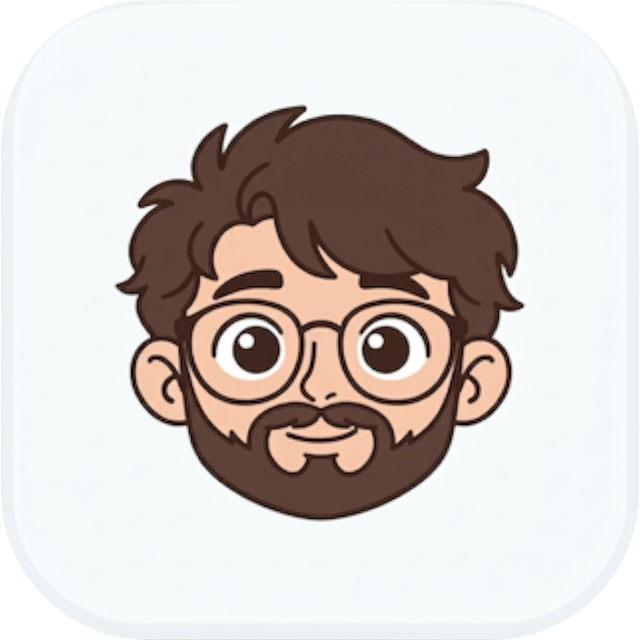

EN

أدوات لجلساتك
اختر نشاطاً وابدأوا التعلّم معاً.
الأفعال في الاستخدام
استكشف الأفعال وصيغها مع إشارات بصرية.
التسلسل ممتع
رتّب خطوات الأنشطة اليومية.
احكي حلو
أنشطة مرحة للكلام المريح.
أصواتي العربية
أصوات الكلام والمطابقة والذاكرة وملاحظات لينغ.
أصوات من حولي
الاستماع والتمييز والذاكرة السمعية.
تدريب النطق
ألعاب النطق: الكلمات والمقاطع.
تقارير الأطفال